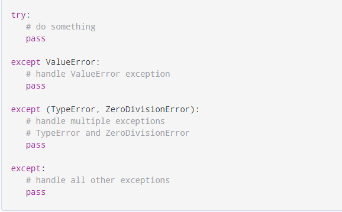
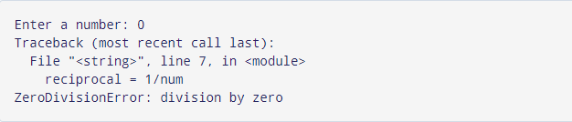

Python has many built-in exceptions that are raised when your program encounters an error (something in the program goes wrong).
When these exceptions occur, the Python interpreter stops the current process and passes it to the calling process until it is handled. If not handled, the program will crash.
For example, let us consider a program where we have a function A that calls function B, which in turn calls function C. If an exception occurs in function C but is not handled in C, the exception passes to B and then to A.
If never handled, an error message is displayed and our program comes to a sudden unexpected halt.
In Python, exceptions can be handled using a try statement.
The critical operation which can raise an exception is placed inside the try clause. The code that handles the exceptions is written in the except clause.
We can thus choose what operations to perform once we have caught the exception. Here is a simple example.
# import module sys to get the type of exception
import sys
randomList = ['a', 0, 2]
for entry in randomList:
try:
print("The entry is", entry)
r = 1/int(entry)
break
except:
print("Oops!", sys.exc_info()[0], "occurred.")
print("Next entry.")
print()
print("The reciprocal of", entry, "is", r)

In this program, we loop through the values of the randomList list. As previously mentioned, the portion that can cause an exception is placed inside the try block.
If no exception occurs, the except block is skipped and normal flow continues(for last value). But if any exception occurs, it is caught by the except block (first and second values).
Here, we print the name of the exception using the exc_info() function inside sys module. We can see that a causes ValueError and 0 causes ZeroDivisionError.
Since every exception in Python inherits from the base Exception class, we can also perform the above task in the following way:
# import module sys to get the type of exception
import sys
randomList = ['a', 0, 2]
for entry in randomList:
try:
print("The entry is", entry)
r = 1/int(entry)
break
except Exception as e:
print("Oops!", e.__class__, "occurred.")
print("Next entry.")
print()
print("The reciprocal of", entry, "is", r)
This program has the same output as the above program.
In the above example, we did not mention any specific exception in the except clause.
This is not a good programming practice as it will catch all exceptions and handle every case in the same way. We can specify which exceptions an except clause should catch.
A try clause can have any number of except clauses to handle different exceptions, however, only one will be executed in case an exception occurs.
We can use a tuple of values to specify multiple exceptions in an except clause. Here is an example pseudo code.
try:
# do something
pass
except ValueError:
# handle ValueError exception
pass
except (TypeError, ZeroDivisionError):
# handle multiple exceptions
# TypeError and ZeroDivisionError
pass
except:
# handle all other exceptions
pass
In Python programming, exceptions are raised when errors occur at runtime. We can also manually raise exceptions using the raise keyword.
We can optionally pass values to the exception to clarify why that exception was raised.
>>> raise KeyboardInterrupt
Traceback (most recent call last):
...
KeyboardInterrupt
>>> raise MemoryError("This is an argument")
Traceback (most recent call last):
...
MemoryError: This is an argument
>>> try:
... a = int(input("Enter a positive integer: "))
... if a <= 0:
... raise ValueError("That is not a positive number!")
... except ValueError as ve:
... print(ve)
...
Enter a positive integer: -2
That is not a positive number!
In some situations, you might want to run a certain block of code if the code block inside try ran without any errors. For these cases, you can use the optional else keyword with the try statement.
Note: Exceptions in the else clause are not handled by the preceding except clauses.
Let's look at an example:
# program to print the reciprocal of even numbers
try:
num = int(input("Enter a number: "))
assert num % 2 == 0
except:
print("Not an even number!")
else:
reciprocal = 1/num
print(reciprocal)
Output
If we pass an odd number:
Enter a number: 1
Not an even number!
If we pass an even number, the reciprocal is computed and displayed.
Enter a number: 4
0.25
However, if we pass 0, we get ZeroDivisionError as the code block inside else is not handled by preceding except.
The try statement in Python can have an optional finally clause. This clause is executed no matter what, and is generally used to release external resources.
For example, we may be connected to a remote data center through the network or working with a file or a Graphical User Interface (GUI).
In all these circumstances, we must clean up the resource before the program comes to a halt whether it successfully ran or not. These actions (closing a file, GUI or disconnecting from network) are performed in the finally clause to guarantee the execution.
Here is an example of file operations to illustrate this.
try:
f = open("test.txt",encoding = 'utf-8')
# perform file operations
finally:
f.close()
This type of construct makes sure that the file is closed even if an exception occurs during the program execution.